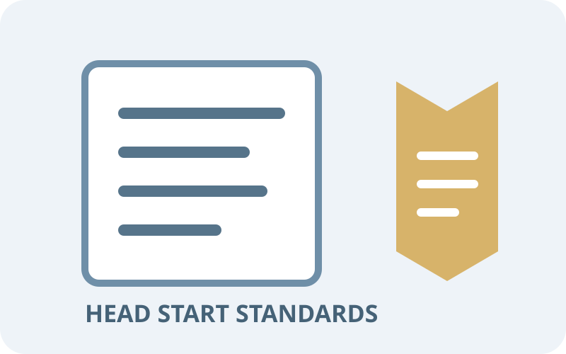
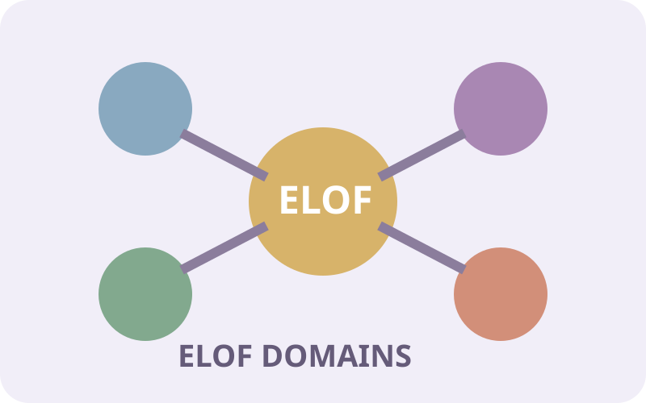
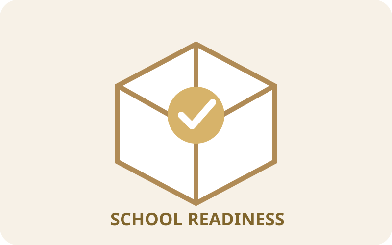

Performance Standards
Explore documentation, summaries, and educator supports related to the Head Start Program Performance Standards.
Explore Resources →School readiness is the progress children make across developmental domains as they build the skills, confidence, relationships, and knowledge that support future learning. Use these resources to connect program expectations with what you observe and do with children every day.
School readiness is not a single test or a checklist of skills. It is an ongoing process supported by responsive relationships, developmentally appropriate experiences, family partnerships, and careful attention to each child’s progress.
Start with the framework, then follow the links to practical guidance for observing children, assessing progress, and responding to individual needs.

Explore documentation, summaries, and educator supports related to the Head Start Program Performance Standards.
Explore Resources →
Explore the Early Learning Outcomes Framework domains, developmental goals, and classroom connections.
Explore ELOF →
Support planning and documentation connected to school readiness goals and children's developmental progress.
Explore Resources →Connect Head Start and ELOF expectations to classroom environments, learning experiences, routines, and intentional teaching.
Explore Resources →Use observation and documentation to understand children's learning and connect evidence to planning.
Explore Resources →Explore assessment tools and progress-monitoring practices that help educators use evidence of children’s learning to guide responsive support.
Explore Resources →Use this cycle to connect expectations with real evidence of children’s development and make informed decisions about next steps.
Review the relevant Head Start standards, ELOF domains, and developmental goals.
Watch for children's interests, skills, behaviors, questions, and developmental progress.
Record meaningful evidence of children's learning through observations and work samples.
Use what you learn about children to plan intentional experiences and learning extensions.